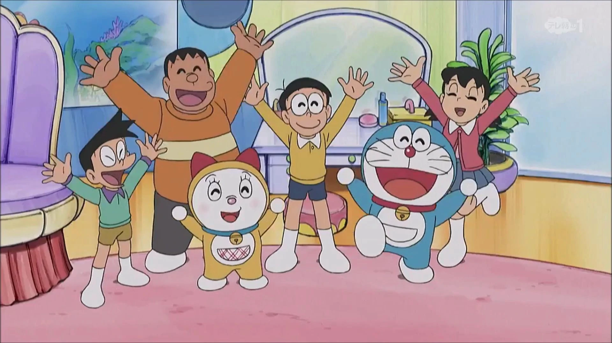

Back
Tuiter
Edit Profile
Save

Name:
Bio
In the 1973 anime, Nobita had black hair, round glasses and a red shirt with navy blue shorts. He was also shorter than his other versions. Nobita is the hero at best and the villain at worst. At the beginning of the series, Nobita is a rather lazy person who has a cycle of constantly napping after school, keeping him up late when he wakes up late for school.